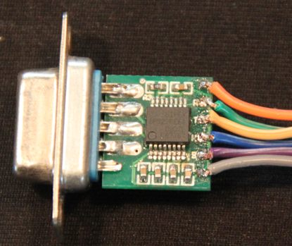
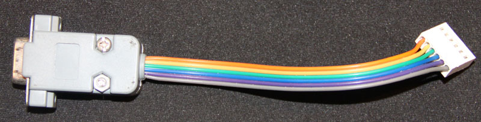

G-CT15是用于LPC2000系列ARM MCU的ISP工具。
它除了实现RS232-TTL电平转换外，还由串口产生LPC的reset和bootp信号。 这样，不起身开关电源、插拔跳线，就可以烧录和启动板子，甚至可以通过Windows远程桌面或Unix远程登录来远程烧录和调试硬件。
与NXP的烧录工具不同的是，G-CT15的引脚定义，使得Windows的超级终端或Unix的minicom也能不拔线不跳线来运行程序，甚至可以由超级终端来重起硬件。 板子右侧的6个引脚依次是：
|
我们提供了与G-CT15配合使用的烧录程序，运行需要JRE 1.6及以上Java运行库支持。运行时在命令行输入：
java -jar Flasher.jar COM1 xx.hex 9600其中xx.hex为hex文件名，COM1为串口文件名，9600为程序启动后配置的串口速率。烧录完成后，会启动一个终端程序，可以与板上程序通信。
>>下载烧录程序flash.jar。
也可以使用开源的lpc21isp，通过设置命令行参数来使用G-CT15。命令行如下：
lpc21isp -wipe -control -controlinv xx.hex COM1 19200 11059
我们编译了二进制版本供下载：
>>下载Windows用的lpc21isp >>下载MacOS用的lpc21isplpc21isp也可以用来做串口终端，对于没有预先安装超级终端的Windows用户会很方便。用作串口终端时的命令行参数如下：
lpc21isp -termonly COM1 9600 11059
G-CT15的板子尺寸为15x16mm，可以装进一个DB-9的塑壳中。 